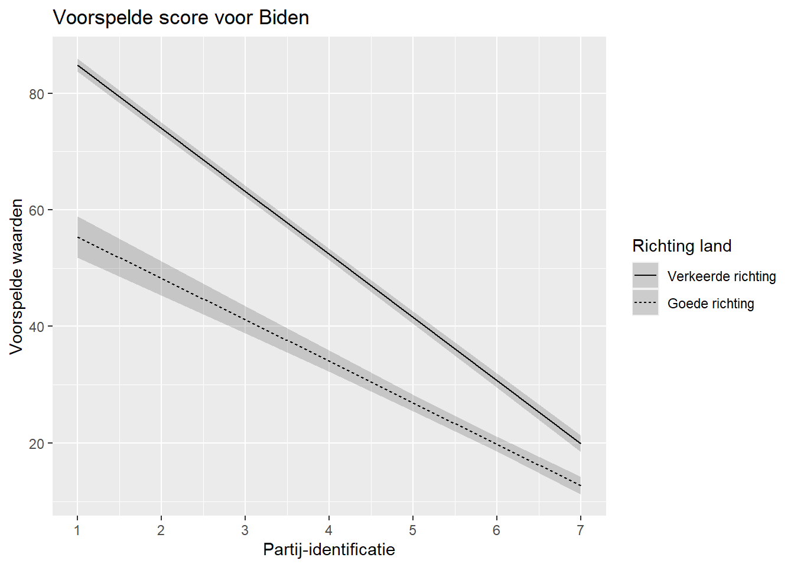
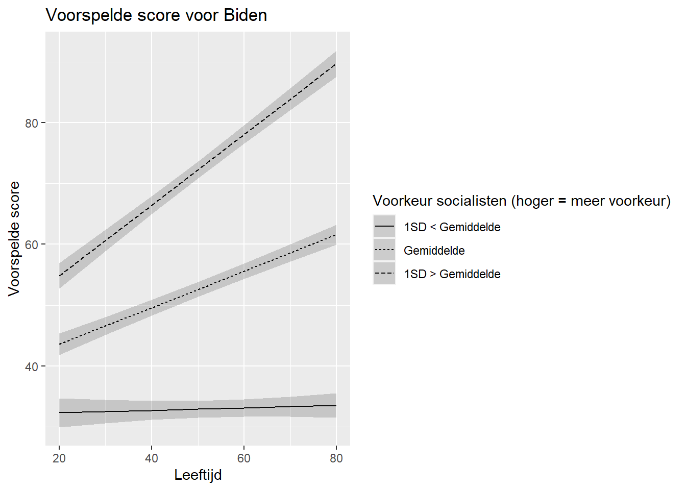
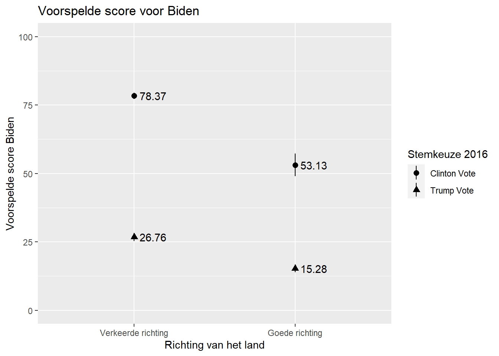
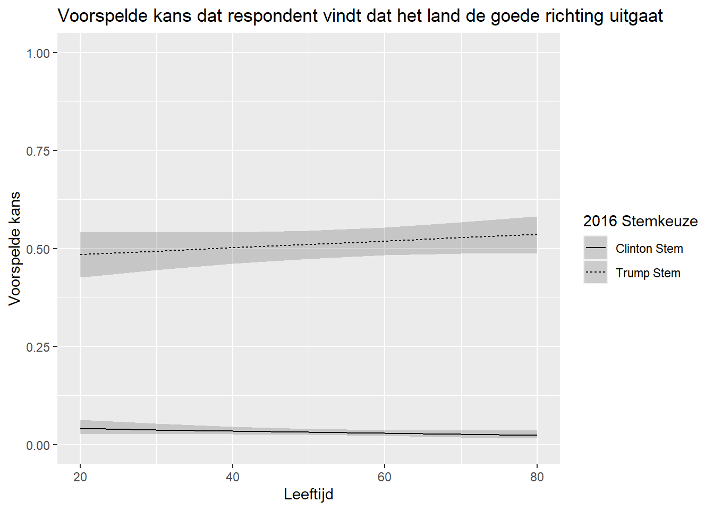

#Packages
library(broom) #Modelresultaten
library(rio) #laden van data
library(tidyverse) #data manipulatie en grafieken
library(marginaleffects) #marginale effecten en voorspelde waarden berekenen
#Data
anes <- import("data/anes_interactions.rda")
#Modellen
biden_int <- lm(biden ~ pid * right_track + rural_urban, data = anes)
righttrack_int <- glm(right_track ~ vote2016 * age + rural_urban,
family = "binomial", data = anes)17 Voorspelde Waarden van Interactiemodellen
We kunnen marginale effecten gebruiken om interactie-effecten te verduidelijken zoals we in het vorige hoofdstuk gezien hebben. Maar we kunnen ook kijken naar voorspelde waarden (of kansen bij logistische regressie) van Y als een onafhankelijke variabele X en een onafhankelijke variable Z (de moderator) andere waarden aannemen. We gebruiken de predictions() functie uit het marginaleffects package. We bouwen verder op reeds geziene informatie in andere hoofdstukken (lineaire regressie: Chapter 5; logistische regressie: Chapter 11).
17.1 Binaire X Continue Interactie
We hebben reeds een model geschat waarbij scores voor kandidaat Biden voorspeld worden met een interactie van partij-identificatie (pid) en perceptie over de richting dat het land uitgaat (right_track).
Op basis van dit model (biden_int), berekenen we nu met predictions() de voorspelde waarden voor elke combinatie van waarden voor de 2 onafhankelijke variabelen in de interactie (bv. pid = 1 & right_track = “Right Direction”, pid = 1 & right_track = “Wrong Track”, pid = 2 & right_track = “Right Direction”…). Als er te veel waarden zouden zijn om realistisch op deze manier te werk te gaan dan kiezen we voorspellingen op basis van een subset van waarden (bv. minimum, gemiddelde, maximum).
Andere onafhankelijke variabelen in het model worden op hun gemiddelde (continue variabelen) of modus (factor variabelen) gehouden.
#Voorspelde waarden berekenen en opslaan in data object
biden_int_preds <- predictions(biden_int,
newdata = datagrid(pid = c(1,2,3,4,5,6,7),
right_track = c("Right Direction", "Wrong Track")))biden_int_preds <- predictions(biden_int,-
We passen de functie ‘predictions’ toe op het model tussen haakjes en slaan de resultaten op in een data object (“biden_int_preds”) dat we later weer kunnen gebruiken.
newdata = datagrid(pid = c(1,2,...7), right_track = c("Right Direction", "Wrong Track")))-
We duiden de gewenste waarden van de predictoren aan waarvoor voorspellingen berekend zullen worden met de “newdata = datagrid()” optie. We duiden alle waarden voor pid aan (1 tot 7) en de 2 mogelijke waarden voor right_track (Right Direction or Wrong Track).1 In eigen toepassingen wordt dit aangepast volgens de eigen variabelen.
De dataset die we verkrijgen heeft 14 rijen met voorspelde waarden: 7 (waarden voor pid) * 2 (waarden voor right_track).
# print resultaten
biden_int_preds
pid right_track Estimate Std. Error z Pr(>|z|) S 2.5 % 97.5 %
1 Right Direction 55.4 1.808 30.6 <0.001 681.6 51.8 58.9
1 Wrong Track 84.8 0.581 146.0 <0.001 Inf 83.7 86.0
2 Right Direction 48.3 1.493 32.3 <0.001 759.2 45.3 51.2
2 Wrong Track 74.0 0.515 143.7 <0.001 Inf 73.0 75.0
3 Right Direction 41.1 1.193 34.5 <0.001 863.3 38.8 43.5
3 Wrong Track 63.2 0.486 130.1 <0.001 Inf 62.2 64.1
4 Right Direction 34.0 0.925 36.8 <0.001 982.0 32.2 35.8
4 Wrong Track 52.4 0.500 104.8 <0.001 Inf 51.4 53.3
5 Right Direction 26.9 0.724 37.2 <0.001 1002.1 25.5 28.3
5 Wrong Track 41.5 0.554 75.0 <0.001 Inf 40.5 42.6
6 Right Direction 19.8 0.656 30.2 <0.001 662.9 18.5 21.1
6 Wrong Track 30.7 0.638 48.2 <0.001 Inf 29.5 32.0
7 Right Direction 12.7 0.757 16.8 <0.001 207.4 11.2 14.2
7 Wrong Track 19.9 0.741 26.8 <0.001 524.2 18.4 21.3
rural_urban
Suburb
Suburb
Suburb
Suburb
Suburb
Suburb
Suburb
Suburb
Suburb
Suburb
Suburb
Suburb
Suburb
Suburb
Columns: rowid, estimate, std.error, statistic, p.value, s.value, conf.low, conf.high, rural_urban, pid, right_track, biden
Type: response De voorspellingen kunnen we visueel presenteren in een plot. Het proces dat we volgen is vrijwel hetzelfde als wat we doen voor een model zonder interactie (zie Section 8.6). Er is echter een belangrijke toevoeging: het linetype gedeelte van de syntax, dat enkel gebruikt kan worden indien er een factor variabele is.
Voor we het plot produceren veranderen we de waarden voor right_track naar het Nederlands zodat ze correct worden weergegeven op het plot. Net zoals bij marginale effecten zouden we de code voor predictions ook kunnen combineren met de ggplot code via de pipe operator.
biden_int_preds |>
mutate(right_track = recode(right_track,
"Wrong Track" = "Verkeerde richting",
"Right Direction" = "Goede richting")) |>
ggplot(aes(x=pid, y=estimate, linetype = right_track)) +
geom_line() +
geom_ribbon(aes(ymin=conf.low, ymax=conf.high), alpha = 0.2) +
labs(title = "Voorspelde score voor Biden",
x = "Partij-identificatie",
y = "Voorspelde waarden",
linetype = "Richting land" ) +
scale_x_continuous(breaks=c(1,2,3,4,5,6,7))
ggplot(..., linetype = right_track)) + geom_line() + geom_ribbon(...) +-
Dit gedeelte van de syntax is grotendeels ook al gebruikt in eerdere weken. Een belangrijke toevoeging is
linetype = right_track. Zo vragen weggplot()om de voorspelde waarden voor elke categorie van “right_track” weer te geven als verschillende lijnen. We zouden de voorspellingen ook kunnen onderscheiden op een andere manier, bv. met kleur (color = right_track). Delinetype(encolor) functies werken enkel met factor variabelen. De variabeleright_trackis hier reeds een factor dus we hebben geen verdere data managment stappen moeten ondernemen. Zie Section A.5 voor meer informatie.
17.2 Continue X Continue Interactie
Om voorspelde waarden voor interacties tussen continue variabelen te berekenen en te plotten, is het proces iets ingewikkelder, omdat er veel mogelijke combinaties van waarden zijn om voorspellingen voor te maken.
In het vorige hoofdstuk hebben we het biden_int2 model gebruikt om Biden scores te voorspellen met een interactie tussen age en socialists. We schatten dat model opnieuw hieronder.
#Model schatten en resultaten opslaan
biden_int2 <- lm(biden ~ socialists * age + rural_urban, data = anes)
#resultaten bekijekn
tidy(biden_int2)# A tibble: 7 × 5
term estimate std.error statistic p.value
<chr> <dbl> <dbl> <dbl> <dbl>
1 (Intercept) 30.0 2.00 15.0 4.68e-50
2 socialists 0.197 0.0381 5.17 2.46e- 7
3 age -0.0752 0.0345 -2.18 2.95e- 2
4 rural_urbanRural -10.9 1.08 -10.1 9.02e-24
5 rural_urbanSmall Town -7.04 0.924 -7.62 3.00e-14
6 rural_urbanCity 0.455 0.883 0.516 6.06e- 1
7 socialists:age 0.00980 0.000699 14.0 6.21e-44Beide variabelen kunnen veel mogelijke waarden aannemen. We zouden voorspellingen kunnen maken voor waarden van 0 tot 100 voor socialists met intervallen van 10, en van 20 tot 80 voor agemet intervallen van 10. Dit zou ons echter veel waarden opleveren die we moeilijk zouden kunnen plotten (en begrijpen).
Wat vaak gebeurt in de praktijk is dat we 1 van de 2 predictoren kiezen en voorspellingen maken voor 3 waarden: het gemiddelde, 1 standaarddeviatie (SD) onder het gemiddelde en 1 standaarddeviatie (SD) boven het gemiddelde. De continue variabele zal eigenlijk getransformeerd worden in een factor met 3 waarden. Zo kunnen we een plot maken met 3 lijnen. We transformeren doorgaans de moderator (Z).
Voor het ‘biden_int2’ model, nemen we nu (bij wijze van voorbeeld) socialists als de moderator. Eerst berekenen we de drie relevante waarden (gemiddelde, 1 SD daaronder, 1 SD daarboven. Deze statistieken moeten we berekenen op basis van de observaties gebruikt in het model. Dit zijn niet altijd het aantal observaties in de dataset door missende waarden op andere variabelen. Als tussenstap gebruiken we hier de predictions() functie van het marginaleffects package gezien deze functie een nieuwe dataset creëert met alle complete observaties. 2
predictions(biden_int2) |> #nieuw dataobject met complete observaties
summarise(
mean_below = mean(socialists) - sd(socialists), #1 SD onder gemiddelde
mean = mean(socialists), #gemiddelde
mean_above = mean(socialists) + sd(socialists)) #1 SD boven gemiddelde mean_below mean mean_above
1 9.716161 38.33639 66.95661Nu kunnen we de voorspelde waarden berekenen op basis van de waarden voor socialists die we net berekend hebben. Voor leeftijd vragen we ook geen voorspellingen over de hele schaal, maar voor de leeftijden van 20 tot 80 met tussenstappen van 10 jaar.
#voorspelde waarden
biden_int2_preds <- predictions(biden_int2,
newdata = datagrid(
socialists = c(9.72, 38.34, 66.96),
age = c(20,30,40,50,60,70,80)))
#print resultaten
biden_int2_preds
socialists age Estimate Std. Error z Pr(>|z|) S 2.5 % 97.5 %
9.72 20 32.3 1.208 26.8 <0.001 522.3 30.0 34.7
9.72 30 32.5 0.983 33.1 <0.001 796.8 30.6 34.5
9.72 40 32.7 0.802 40.8 <0.001 Inf 31.2 34.3
9.72 50 32.9 0.703 46.9 <0.001 Inf 31.6 34.3
9.72 60 33.1 0.718 46.1 <0.001 Inf 31.7 34.6
9.72 70 33.3 0.843 39.6 <0.001 Inf 31.7 35.0
9.72 80 33.5 1.037 32.3 <0.001 759.7 31.5 35.6
38.34 20 43.6 0.891 48.9 <0.001 Inf 41.8 45.3
38.34 30 46.6 0.755 61.7 <0.001 Inf 45.1 48.1
38.34 40 49.6 0.657 75.5 <0.001 Inf 48.3 50.9
38.34 50 52.6 0.612 86.0 <0.001 Inf 51.4 53.8
38.34 60 55.6 0.633 87.8 <0.001 Inf 54.4 56.8
38.34 70 58.6 0.715 82.0 <0.001 Inf 57.2 60.0
38.34 80 61.6 0.839 73.5 <0.001 Inf 60.0 63.3
66.96 20 54.8 1.083 50.6 <0.001 Inf 52.7 57.0
66.96 30 60.6 0.892 68.0 <0.001 Inf 58.9 62.4
66.96 40 66.4 0.756 87.9 <0.001 Inf 65.0 67.9
66.96 50 72.3 0.709 102.0 <0.001 Inf 70.9 73.6
66.96 60 78.1 0.766 101.9 <0.001 Inf 76.6 79.6
66.96 70 83.9 0.909 92.2 <0.001 Inf 82.1 85.7
66.96 80 89.7 1.105 81.2 <0.001 Inf 87.5 91.8
rural_urban
Suburb
Suburb
Suburb
Suburb
Suburb
Suburb
Suburb
Suburb
Suburb
Suburb
Suburb
Suburb
Suburb
Suburb
Suburb
Suburb
Suburb
Suburb
Suburb
Suburb
Suburb
Columns: rowid, estimate, std.error, statistic, p.value, s.value, conf.low, conf.high, rural_urban, socialists, age, biden
Type: response Deze dataset heeft 21 observaties: 7 waarden voor age * 3 waarden voor socialists.
We plotten de voorspelde waarden zoals hiervoor met het linetype statement. We moeten de socialist variabele in de predictions dataset wel veranderen in een factor om het statement te kunnen gebruiken. We gebruiken hier de ‘factor’ functie gezien de data numeriek is en niet gelabeld (bij labels gebruiken we doorgaans factorize).
#Class variabele
class(biden_int2_preds$socialists)[1] "numeric"#factor maken
biden_int2_preds <- biden_int2_preds |>
mutate(socialists = factor(socialists,
levels = c(9.72, 38.34, 66.96),
labels = c("1SD < Gemiddelde", "Gemiddelde", "1SD > Gemiddelde")))We kunnen dan de plot maken op een vergelijkbare manier als eerder:
ggplot(biden_int2_preds, aes(x=age, y=estimate, linetype=socialists)) +
geom_line() +
geom_ribbon(aes(ymin=conf.low, ymax=conf.high), alpha = .2) +
labs(title = "Voorspelde score voor Biden",
y = "Voorspelde score",
x = "Leeftijd",
linetype= "Voorkeur socialisten (hoger = meer voorkeur)")
17.3 Binaire x Binaire Interactie
Voor een interactie met twee binaire variabelen gelden gelijkaardige principes.
Een dergelijke interactie gebruiken we in het biden_int3-model, namelijk een interactie tussen (right_track) en vote2016 (Clinton kiezer = 0, Trump kiezer = 1). Als controlevariabele voegen we rural_urban toe.
#Model schatten en resultaten oplsaan
biden_int3 <- lm(biden ~ right_track * vote2016 + rural_urban, data = anes)
#resultaten printen
tidy(biden_int3)# A tibble: 7 × 5
term estimate std.error statistic p.value
<chr> <dbl> <dbl> <dbl> <dbl>
1 (Intercept) 78.4 0.581 135. 0
2 right_trackRight Direction -25.2 2.11 -12.0 1.20e-32
3 vote2016Trump Vote -51.6 0.770 -67.0 0
4 rural_urbanRural -2.77 0.907 -3.05 2.30e- 3
5 rural_urbanSmall Town -1.67 0.785 -2.13 3.34e- 2
6 rural_urbanCity 0.452 0.753 0.601 5.48e- 1
7 right_trackRight Direction:vote2016Trum… 13.8 2.28 6.04 1.61e- 9We gebruiken predictions() om voor alle combinaties van deze twee variabelen voorspelde waarden te berekenen. Dit resulteert in 4 voorspelde waarden: Clinton voter & “right direction”, Clinton voter & “wrong track”, Trump voter & “right direction”, en Trump voter & “wrong track”.
predictions(
biden_int3,
by = c("right_track", "vote2016"),
newdata = "mean")
right_track vote2016 Estimate Std. Error z Pr(>|z|) S 2.5 %
Right Direction Trump Vote 15.3 0.737 20.7 <0.001 314.8 13.8
Right Direction Clinton Vote 53.1 2.119 25.1 <0.001 458.6 49.0
Wrong Track Trump Vote 26.8 0.775 34.5 <0.001 864.8 25.2
Wrong Track Clinton Vote 78.4 0.581 134.9 <0.001 Inf 77.2
97.5 %
16.7
57.3
28.3
79.5
Columns: rowid, right_track, vote2016, estimate, std.error, statistic, p.value, s.value, conf.low, conf.high, rural_urban, rowid_dedup
Type: response by = c("right_track", "vote2016")-
Om voorspelde waarden te verkrijgen voor alle categorieën van een binaire/categorische variabele kunnen we gebruik maken van de by = “variable name” optie. Gezien beide predictoren factor variabelen zijn duiden we ze beiden aan.
newdata = "mean")-
Deze optie hebben we hier nodig (gezien we het ‘by’ statement gebruiken) om de overige onafhankelijke variabelen op hun gemiddelde of modus te houden.
De resultaten kunnen we in een plot visualiseren. De syntax is vrijwel hetzelfde als die voor plots van voorspelde waarden voor 1 factor variable (Section 8.6). We moeten gebruikmaken van geom_pointrange(). Nieuw is dat we voorspellingen onderscheiden van elkaar op basis van de waarden van de moderator via de shape = optie. Deze vertelt aan ggplot verschillende vormen te gebruiken voor de voorspelde waarden.[^interaction_03-3]
Voor we plotten vertalen we de labels voor vote2016 naar het Nederlands.
[^interaction_03-3] Dit zou eventueel ook kunnen via kleuren (bv. color = vote2016). Let er wel op dat niet iedereen kleuren kan zien (R heeft wel color-bind palettes beschikbaar). Bovendien kan een plot met kleuren onduidelijk worden afgedrukt in zwart/wit.
predictions(
biden_int3,
by = c("right_track", "vote2016"),
newdata = "mean") |>
ggplot(aes(x = right_track, y=estimate, shape = vote2016)) +
geom_pointrange(aes(ymin = conf.low, ymax = conf.high)) +
geom_text(aes(label = round(estimate, 2), hjust=-0.2)) +
labs(title = "Voorspelde score voor Biden",
x = "Richting van het land",
y = "Voorspelde score Biden",
shape = "Stemkeuze 2016") +
scale_y_continuous(limits = c(0 , 100)) +
scale_x_discrete(labels = c("Wrong Track" = "Verkeerde richting", "Right Direction" = "Goede richting"))- 1
-
We doen hier alles in 1 syntax-stap. We zouden dit in meerdere stappen kunnen opspitsen: eerst voorspellingen maken en oplsaan in data-object, dan data doorvoeren naar
ggplot(). - 2
-
Indien voorspelde waarden gelijkaardig zijn dan kunnen de markers overlappen. Om dit te verhelpen kun je de markers wat verplaatsen door
, position = position_dodge(width = 0.2)toe te voegen aan hetgeom_pointrange()gedeelte, na hetaes()gedeelte. De waarde waarmmee markers verschoven worden (hier: 0.2) kun je veranderen. - 3
- We zetten de y-as op een schaal van 0 tot 100. Dit is niet strikt nodig, maar kan de figuur duidelijker maken.

17.4 Logistische regressie: voorbeeld
Bovenstaande syntax is ook van toepassing voor logistische regressie. Hier voorspellen we probabiliteiten in plaats van scores. In dit voorbeeld gebruiken we een rightrack_int model waarin we rightrack voorspellen en een interactie hebben tussen vote2016 en age.
tidy(righttrack_int)# A tibble: 7 × 5
term estimate std.error statistic p.value
<chr> <dbl> <dbl> <dbl> <dbl>
1 (Intercept) -2.95 0.345 -8.56 1.08e-17
2 vote2016Trump Vote 2.82 0.373 7.55 4.22e-14
3 age -0.00946 0.00630 -1.50 1.33e- 1
4 rural_urbanRural 0.208 0.111 1.87 6.15e- 2
5 rural_urbanSmall Town 0.111 0.101 1.10 2.73e- 1
6 rural_urbanCity 0.160 0.111 1.45 1.47e- 1
7 vote2016Trump Vote:age 0.0129 0.00682 1.89 5.84e- 2We berekenen de voorspelde kans dat een respondent vindt dat het land de goede richting uitgaat met combinaties van waarden voor age en vote2016. We maken voorspellingen, vertalen de labels en maken het plot:
right_track_int_preds <-predictions(righttrack_int,
newdata = datagrid(age = seq(from=20,to=80, by=10),
vote2016 = c("Trump Vote", "Clinton Vote"))) |>
mutate(vote2016 = recode(vote2016,
"Clinton Vote" = "Clinton Stem",
"Trump Vote" = "Trump Stem"))
ggplot(right_track_int_preds, aes(x=age, y=estimate, linetype=vote2016)) +
geom_line() +
geom_ribbon(aes(ymin=conf.low, ymax=conf.high), alpha = 0.2) +
labs(title = "Voorspelde kans dat respondent vindt dat het land de goede richting uitgaat",
y = "Voorspelde kans",
x = "Leeftijd",
linetype = "2016 Stemkeuze") +
scale_y_continuous(limits=c(0,1)) 
De waarden voor pid zouden we ook als volgt kunnen aanduiden:
pid = c(1:7).↩︎We zouden ook de originele dataset (
anes) kunnen nemen, missing waarden voor de variabelen gebruikt in het model wegfilteren en de juiste statistieken berekenen:anes \|\> filter(complete.cases(biden, socialists, age, rural_urban)) \|\> summarize(...).predictions()combineert deze stappen voor ons.↩︎